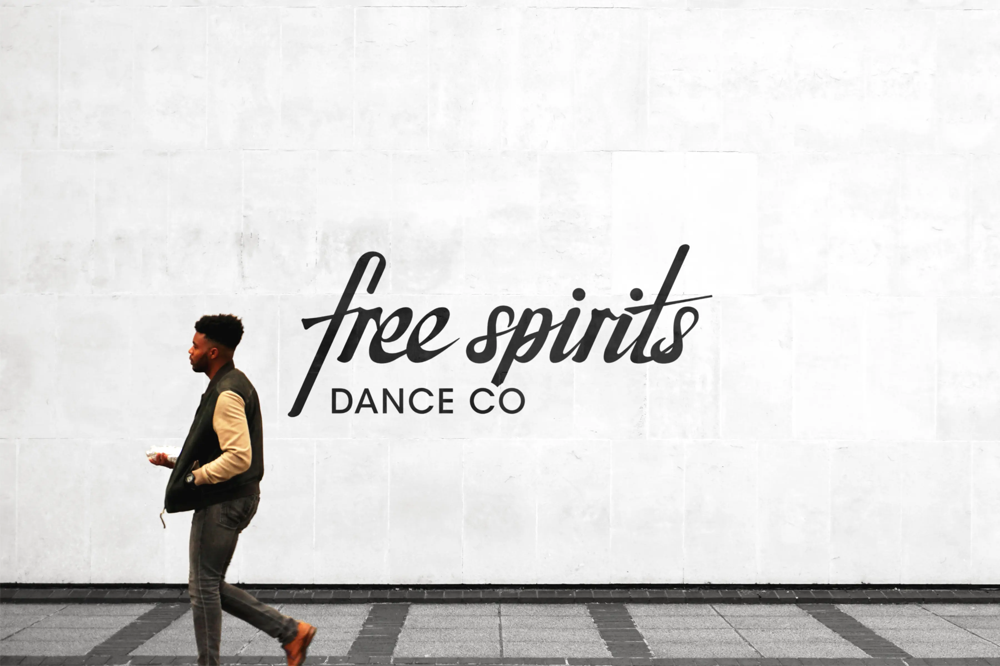
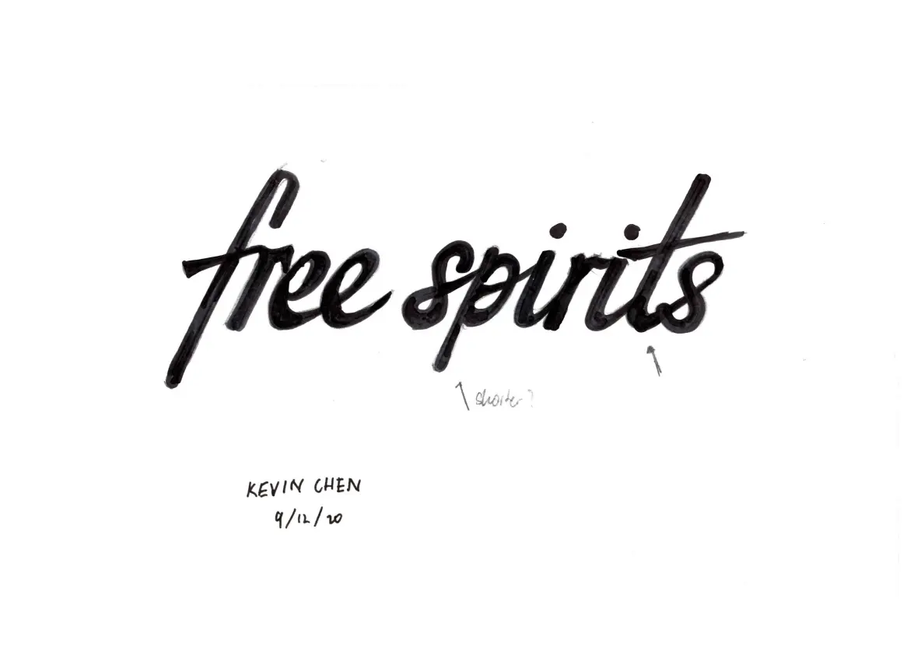
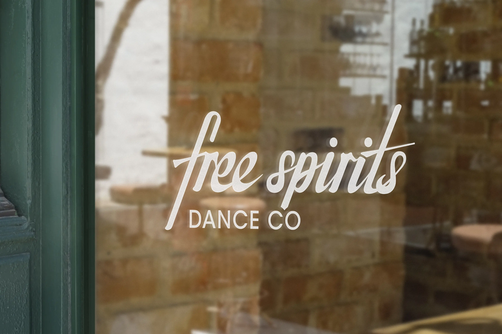
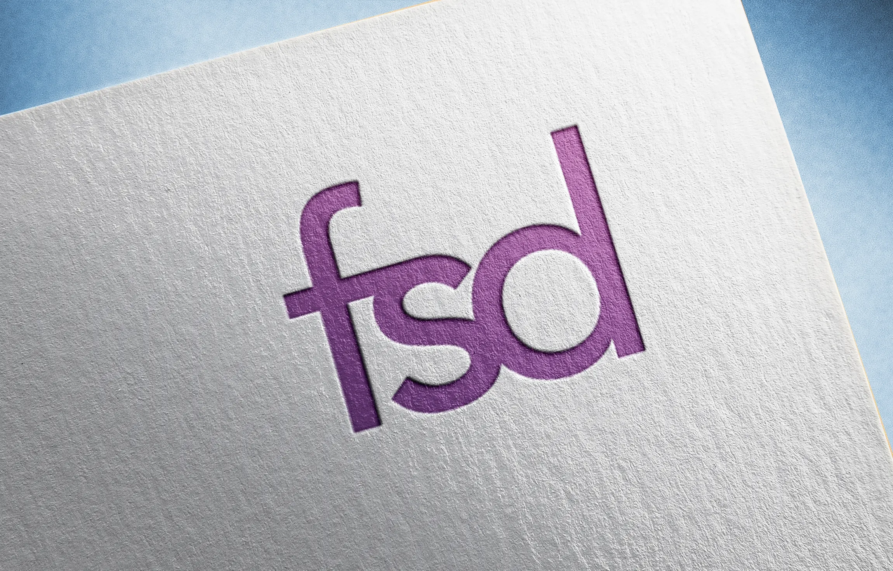
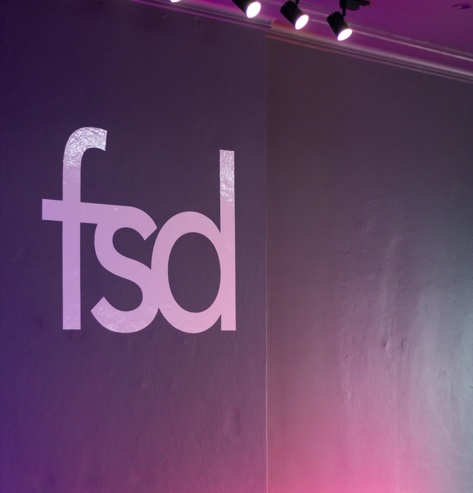

Free Spirits Identity
Free Spirits Logotype
Free Spirits Dance Co. is a small business based in Haymarket, Sydney that teaches dancing to small groups of students. At the end of 2020, they approached me to help them design a logotype that will help them promote their business in photos and videos taken at their studio. The project was to be completed in a short time-frame due to an upcoming event.
After a few rounds of meetings with the business owners discussing the image they wanted for their business, I delivered a logotype that they were very happy with.
The logotype was drawn in many iterations using markers and tracing paper. It was then digitised in Adobe Illustrator.
 New FSD Identity
After enduring the 2021 lockdown, they approached me again; this time to create a more comprehensive identity that will be better suited to their business direction moving forward.
They wanted to widen their audience and expand their customer base, which involved creating a new, modern identity that would be neutral in its style and easier to use on social media and websites.
This involved adapting the work previously done on the brand to a new design language. We endeavoured to create a more professional feel to the company that would suit the expansion of its business model.
 